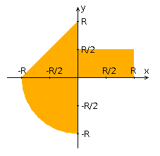

|
Эта страница предназначена для проверки
вхождения точки с координатами X
и Y в область,
отмеченную на графике оранжевым цветом. Для начала работы
выберите нужные значения X, Y,
параметра R
и нажмите кнопку "Проверить".
|
 | |